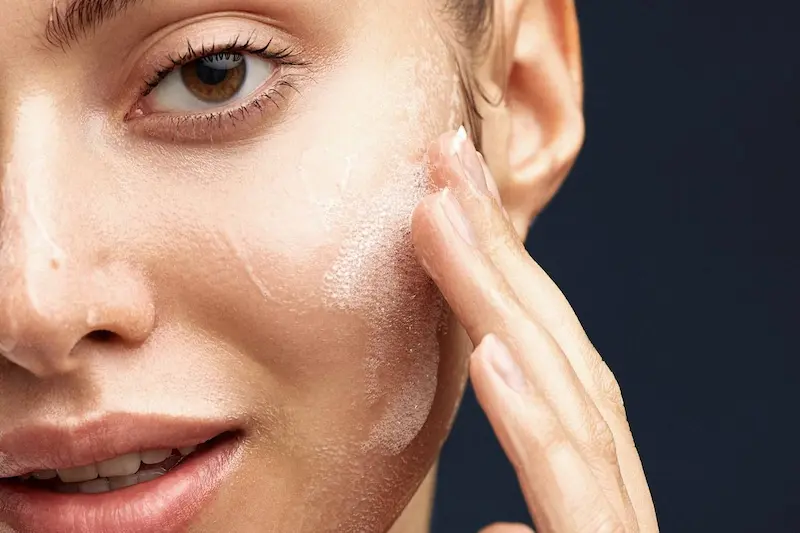
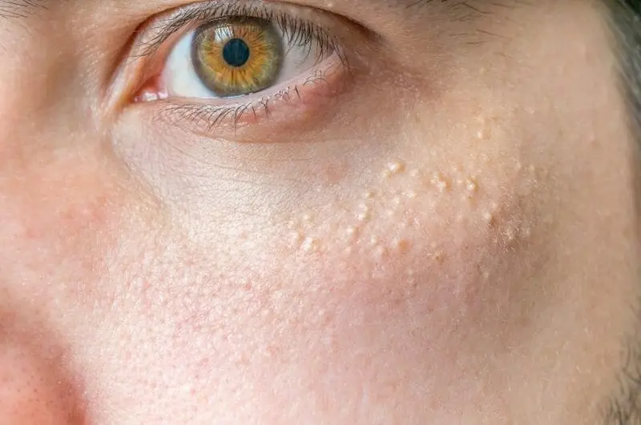
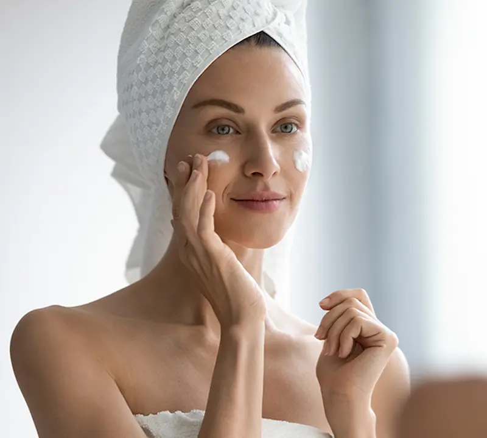
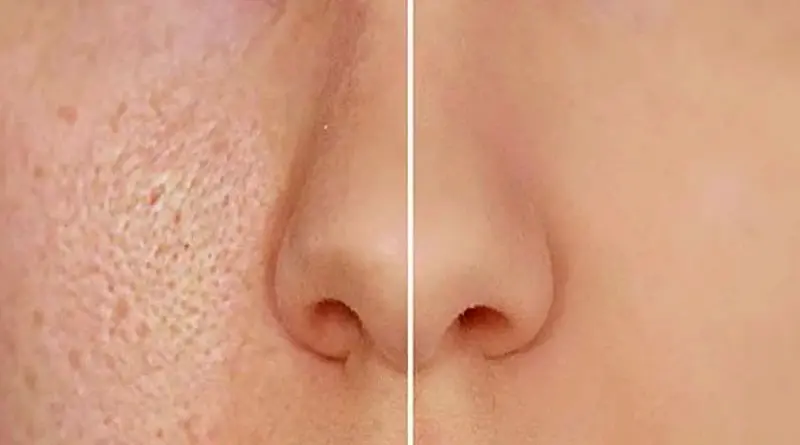
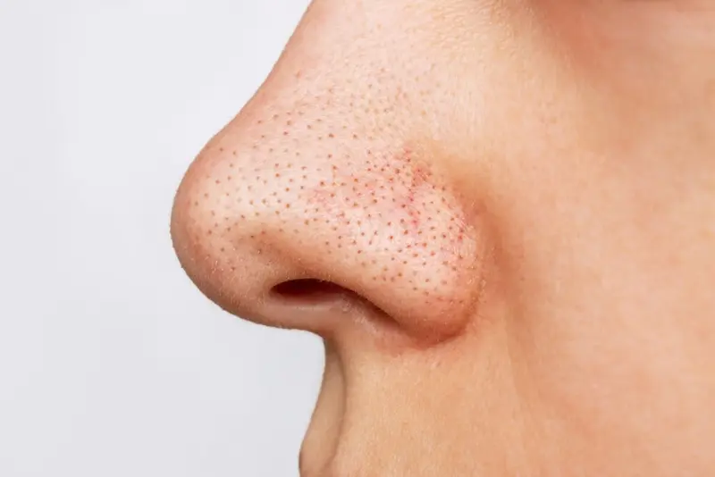
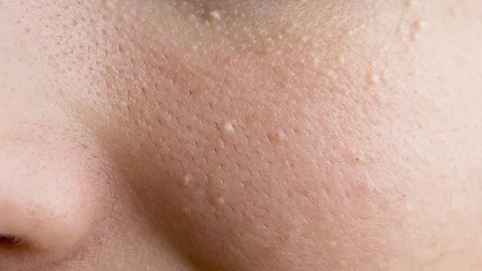
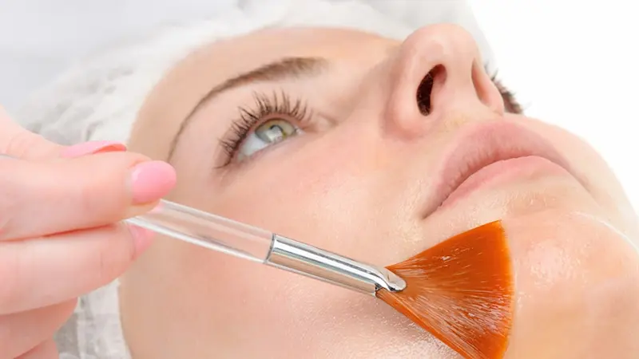
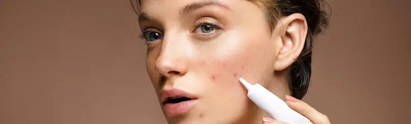

Ingrediente-cheie pentru reglarea sebumului și prevenirea porilor înfundațiCum să îngrijești pielea cu pori înfundați
Scopul principal al îngrijirii este reducerea excesului de sebum, curățarea porilor și prevenirea apariției comedoanelor. Este important să alegi produse de curățare blânde, formule cu exfolianți și să nu neglijezi hidratarea ușoară.
Pori înfundați: cauze și soluții
Porii înfundați apar atunci când sebumul, celulele moarte și impuritățile se acumulează la nivelul pielii. Identificarea cauzei ajută la alegerea unui tratament corect și la prevenirea imperfecțiunilor.


Pori înfundați: ce sunt și de ce apar
Porii înfundați sunt rezultatul combinării excesului de sebum, celulelor moarte și impurităților. Aceștia se manifestă prin puncte negre, comedoane închise și o textură neuniformă a pielii, favorizând apariția inflamațiilor și a acneei.

Semnele principale ale porilor înfundați
Problema poate fi recunoscută ușor după semnele vizibile, fără a aștepta apariția inflamațiilor:

De ce rutina de îngrijire poate agrava problema
Obiceiurile greșite de îngrijire pot intensifica blocarea porilor. Chiar și dorința de a „usca” pielea poate avea efect invers.

Ingrediente eficiente pentru curățarea porilor
Alegerea ingredientelor potrivite ajută la combaterea porilor înfundați, fără a afecta echilibrul pielii:

Sfaturi practice de îngrijire
Pentru a reduce porii înfundați și a preveni apariția comedoanelor, este esențial să menții echilibrul între curățare și hidratare:

Prevenție și stil de viață
Porii înfundați nu depind doar de produsele cosmetice. Stilul de viață și factorii externi au un impact semnificativ:
Întrebări frecvente despre porii înfundați și excesul de sebum
De ce se înfundă porii?
Porii se înfundă atunci când excesul de sebum, celulele moarte și impuritățile se acumulează la suprafața pielii. Acest proces favorizează apariția comedoanelor, inflamațiilor și a aspectului lucios.
Cum îmi dau seama că am pori înfundați?
Semnele includ: piele lucioasă chiar și după curățare, puncte negre, mici inflamații și o textură neuniformă în zona frunții, nasului și obrajilor.
Se poate scăpa complet de porii înfundați?
Porii nu pot fi eliminați complet, însă aspectul lor poate fi redus semnificativ printr-o rutină corectă: curățare blândă, exfoliere cu BHA și produse care reglează sebumul.
Cât de des trebuie curățată pielea?
De două ori pe zi este suficient: dimineața un gel delicat, iar seara produse cu acizi sau ingrediente seboregulatoare. Evită spălarea excesivă, deoarece poate stimula producția de sebum.
Ce ingrediente ajută la curățarea porilor?
Caută produse cu acid salicilic, niacinamidă, zinc, extract de arbore de ceai sau argilă. Acestea reglează sebumul, reduc inflamațiile și îmbunătățesc aspectul porilor.
Este recomandat să folosesc scruburi?
Scruburile mecanice pot irita pielea și agrava problema. Este mai sigur să optezi pentru exfoliere chimică (BHA) și măști cu argilă pentru o curățare eficientă.
Pot folosi machiaj dacă am pori înfundați?
Da, dar este important să alegi produse non-comedogenice și texturi ușoare. Produsele dense pot accentua blocarea porilor, mai ales în zona T.
Când ar trebui să consult un dermatolog?
Dacă porii sunt constant înfundați, apar coșuri sau inflamații și rutina de îngrijire nu dă rezultate, este recomandat să consulți un dermatolog pentru un tratament personalizat.